User Guide
Deploying Locally
Clone the project
git clone https://github.com/xSolstice1/ICT302_Project.git
Go to the project directory
cd my-project
Install dependencies
https://dotnet.microsoft.com/en-us/download [.NET 6.0]
Start the server
dotnet watch run
Login Screen
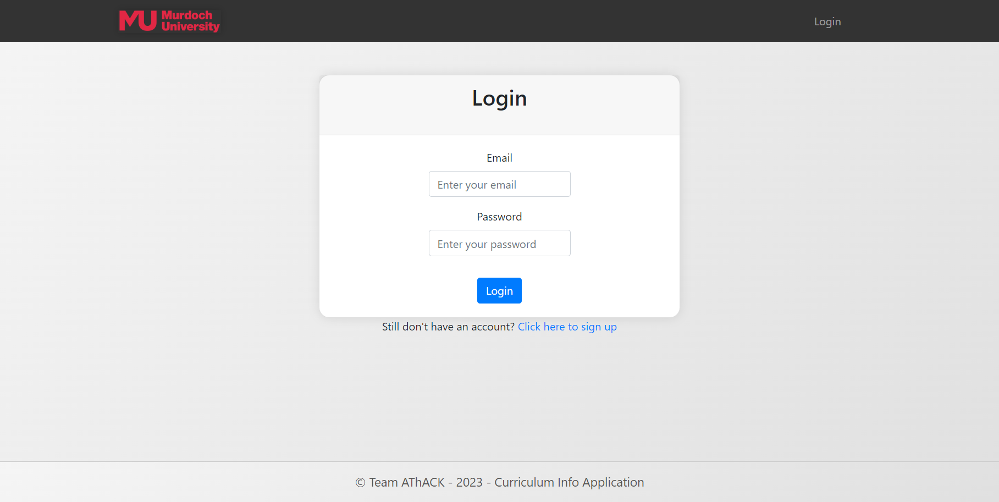
The Login Screen is the gateway to accessing the application's features.
Follow the steps below to log in:
1. Enter Credentials:
Provide your registered email address and password in the designated fields.
2. Submit the Form:
Click the "Login" button to submit the login form:
3. Error Handling:
If there's an issue with the provided credentials, an error message will be displayed:
4. Account Creation:
If you don't have an account yet, you can sign up by clicking the link below the login form:
Still don't have an account? Click here to sign up
Sign Up Screen
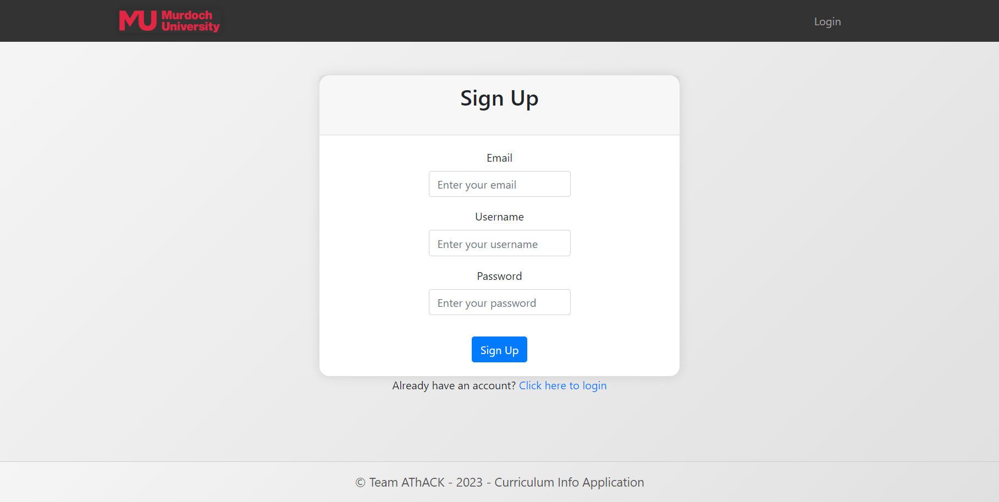
If you have not register your account before,
Follow the steps below to sign up:
1. Navigate to the Sign Up Screen:
Visit the application and click on the "Sign Up" link on the Login Screen.
Still don't have an account? Click here to sign up
2. Fill in Registration Details
3. Submit the Form:
Click the "Sign Up" button to submit the sign up form:
4. Confirmation Messages:
If the account creation is successful, you will see a success message:
5. Error Handling:
If there's an issue with the provided credentials, an error message will be displayed:
6. Returning Users
If you already have an account, you can easily switch back to the Login Screen:
Already have an account? Click here to login
Import Screen
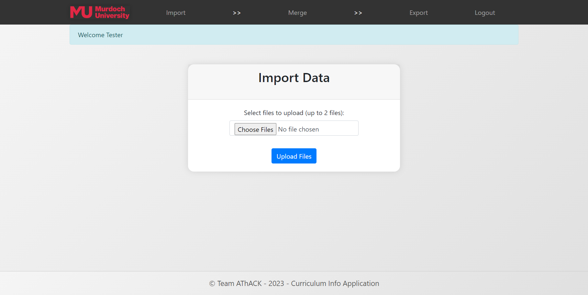
The Import Data feature allows you to upload and process CSV, XLS, or XLSX files to populate your application with data.
1. Access the Import Page
Navigate to the Import Data page by clicking on the "Import" option in the application.
2. Upload Files
I. Click on the "Choose Files" button.
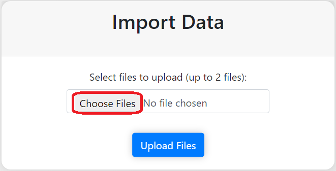
II. Choose the CSV, XLS, or XLSX files you want to import. You can select up to 2 files.
III. You may also drag and drop your files into the column.
IV. Click "Upload Files" to start the import process.
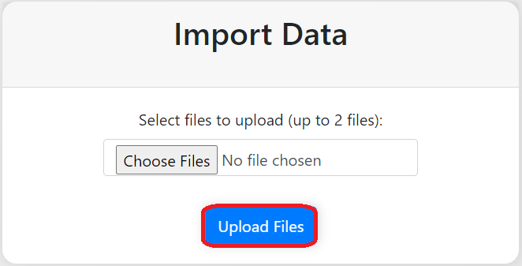
3. Wait for Processing
The application will process the uploaded files. This may take some time depending on the file size and complexity.
4. Review Results
I. Once the import is complete, review the results.
II. If successful, you will see a success message.
III. If there are errors, an error message will be displayed. Correct the issues and try importing again.
5. Proceed to Merge (Optional)
I. If you have uploaded two files, you will be prompted to proceed to the "Merge" page.
II. Here, you can join the imported data based on selected columns.
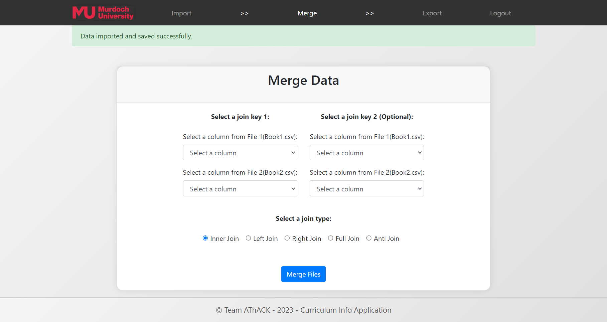
Supported File Formats
- CSV (Comma-Separated Values
- XLS (Excel 97-2003)
- XLSX (Excel 2007 or later)
Important Notes
- Ensure that your files adhere to the supported file formats.
- Application only allowed import max 2 files.
- The application may enforce specific rules or constraints during import. Review error messages for guidance.
For additional assistance, contact support or refer to the application documentation.
Merge Screen
The Merge Data feature allows you to join two XML files based on specified columns and perform various types of joins. This user guide provides step-by-step instructions on using the Merge Data functionality.
Prerequisites
Before you begin, make sure you have the following:
- Two XML files to be merged (File 1 and File 2).
- Understanding of the columns you want to join on (Join Key 1 and optionally Join Key 2).
1. Selecting Join Keys
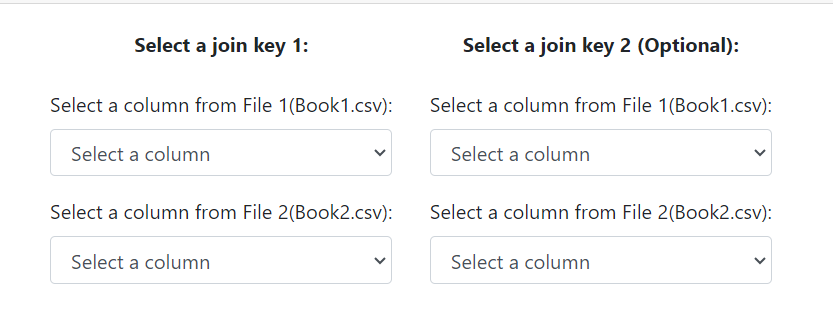
Join Key 1:
Choose a column from File 1 and File 2 to serve as the primary join key.
Join Key 2 (Optional):
If needed, select additional columns from both files for a more complex join. But, the join type will be only allowed concatenated join.
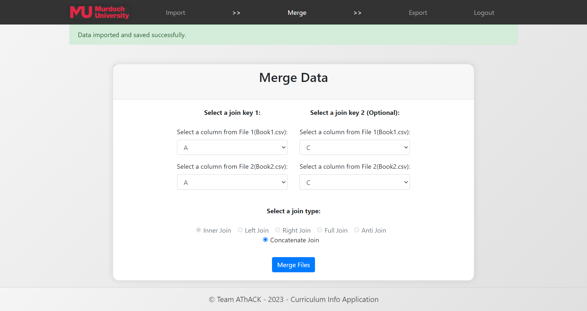
3: Choosing Join Type
Select the type of join you want to perform:
Inner Join
Left Join
Right Join
Full Join
Anti Join
Concatenate Join (For join key 2 selected)
4: Merging Data
- Click the "Merge Files" button to initiate the merge process.
- The application will redirect to export page to display the merged data.
Additional Notes
- Invalid characters in column names are automatically replaced with underscores (_).
- Duplicate element names are resolved by adding numerical suffixes.
- The application provides options for various types of joins and concatenation.
Troubleshooting
If you encounter any issues during the merge process, an error message will be displayed.
Please review the error message and ensure that you have followed the instructions correctly.
For further assistance, contact the system administrator.
Export Screen
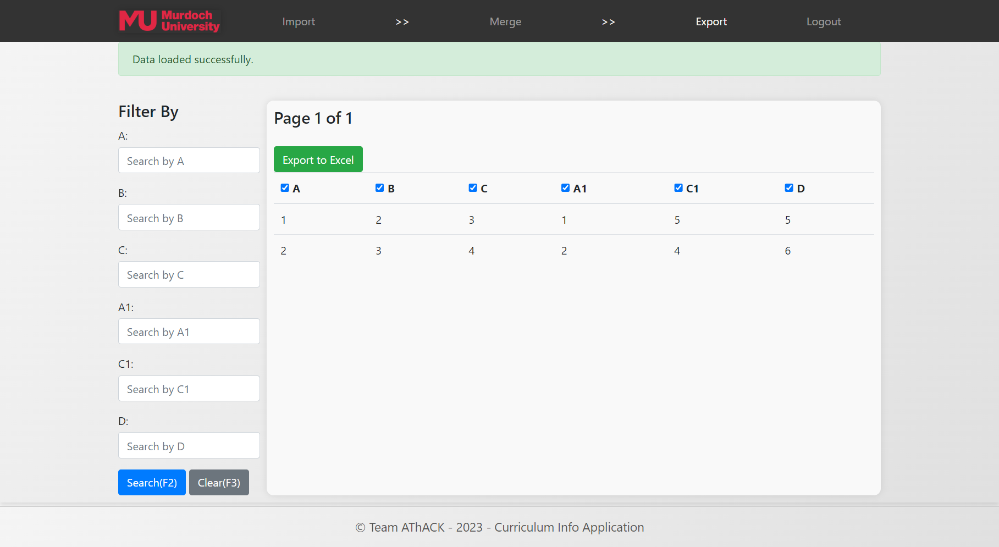
The Export Data feature allows you to view and export merged XML data to Excel.
Export Page Overview
The Export page provides the following features:
Filter By: Narrow down the displayed data by entering search criteria for specific columns.
Pagination: Navigate through the data with pagination controls.
Export to Excel: Create an Excel file containing the displayed data.
Prerequisites
Before you begin, ensure you have already performed the data merge using the Merge Data feature.
1. Filter Data (Optional)
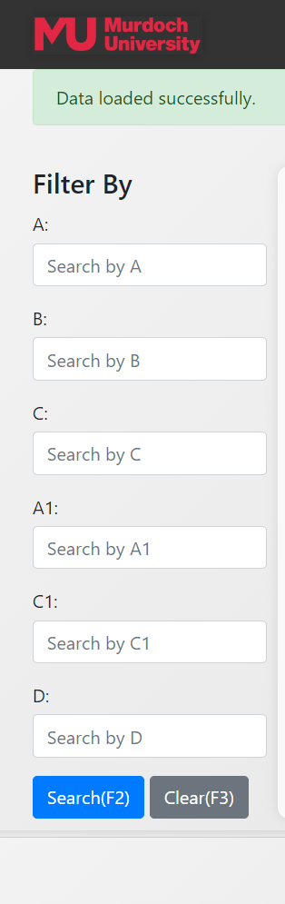
- Use the "Filter By" section to refine the displayed data.
- Enter search criteria for specific columns.
- Click the "Search (F2)" button to apply the filters.
- Click the "Clear (F3)" button to reset filters.
2. Pagination
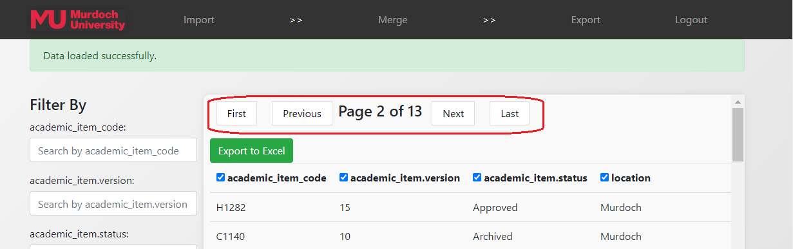
- Navigate through the pages using the pagination controls.
- The current page and total pages are displayed.
3: Selecting Columns
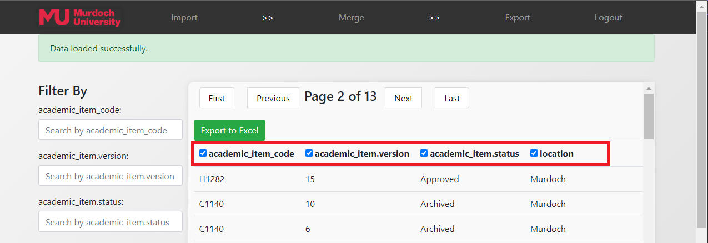
- By default, all columns are selected for export.
- Uncheck columns using the checkboxes if you want to exclude them from the export.
4: Export to Excel
- Click the "Export to Excel" button to generate an Excel file.
- The file will contain the displayed data based on the applied filters and selected columns.
Additional Notes
File Naming: The exported file is named "exportedData.xlsx".
Column Selection: Choose specific columns for export by unchecking the corresponding checkboxes.
Troubleshooting
If you encounter any issues during the merge process, an error message will be displayed.
Please review the error message and ensure that you have followed the instructions correctly.
For further assistance, contact the system administrator.
Admin Guide
User Screen
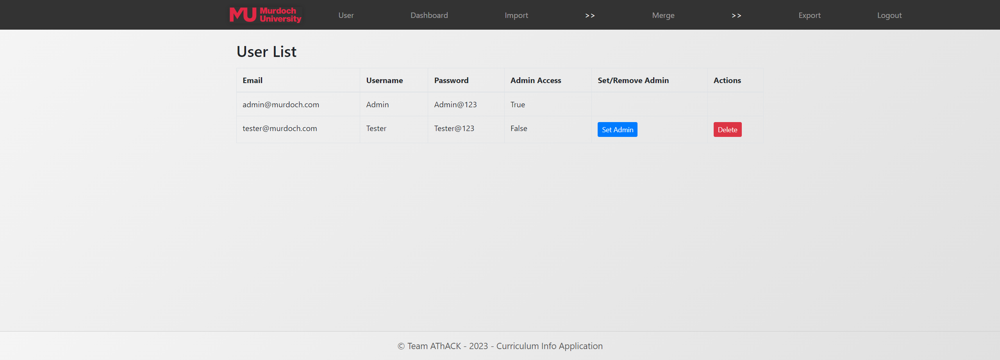
The Admin Management feature allows you to view and manage user accounts, including setting or removing admin privileges and deleting user accounts.
The User List page displays a table with user information, including email, username, password, admin access status, and actions you can perform on each user.
Email: User's email address.
Username: User's username.
Password: User's password (for display purposes only).
Admin Access: Indicates whether the user has admin privileges.
Set/Remove Admin: Button to toggle admin status for each user.
Actions: Buttons to perform actions such as deleting a user.
Prerequisites
Before you begin using the Admin Management functionality, ensure you have logged in to the application.
1. Viewing User Information
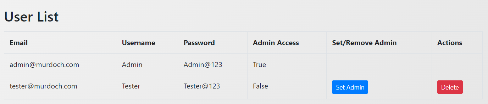
The table displays user information, including email, username, password, and admin access status.
2. Setting/Removing Admin Access
Locate the user for whom you want to change admin access.
If the user's email is not the currently logged-in user's email:
Click the "Set Admin" button to grant admin access.
Click the "Remove Admin" button to revoke admin access.
3: Deleting a User
Locate the user you want to delete,click the "Delete" button.
Additional Notes
Current User Email: The email address of the currently logged-in user is not allowed to perform actions on itself.
Dashboard Screen
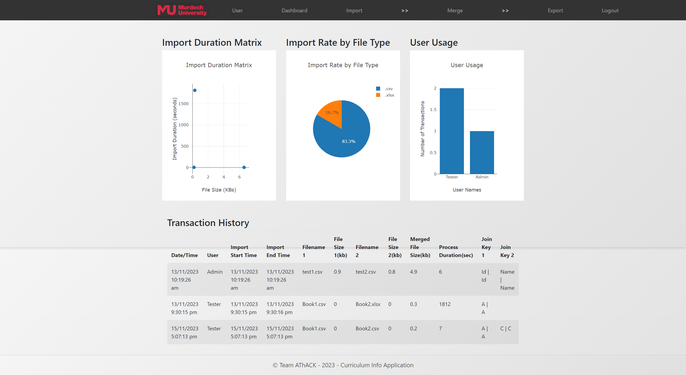
The Dashboard provides a comprehensive view of important statistics and transaction history. It includes visual representations such as charts for import duration, import rate by file type, and user usage. Additionally, it displays a table containing detailed transaction history.
Import Duration Matrix
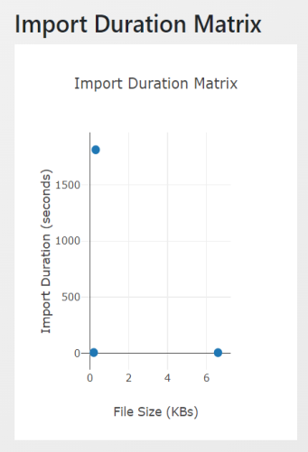
Located in the left column of the dashboard.
- Represents the relationship between file size and import duration.
- Each point on the chart corresponds to a transaction, showing the import duration based on the total file size.
Import Rate by File Type
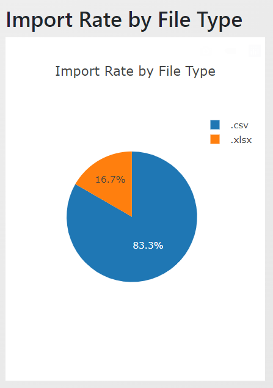
Located in the left column of the dashboard.
- Represents the relationship between file size and import duration.
- Each point on the chart corresponds to a transaction, showing the import duration based on the total file size.
User Usage Bar Chart
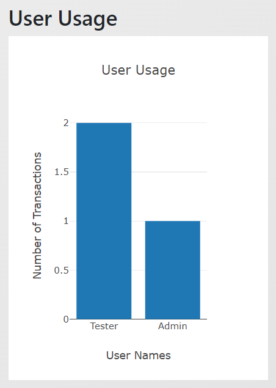
Located in the right column of the dashboard.
- Displays the number of transactions performed by each user.
- Each bar represents a user, and its height indicates the transaction count.
Transaction History Table
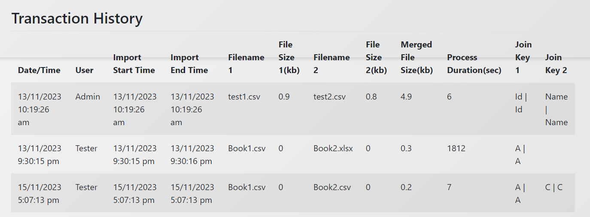
Located below the charts.
- Presents a detailed history of transactions.
- Includes information such as date/time, user, import start/end time, filenames, file sizes, merged file size, process duration, and join keys.
Additional Notes
Automated Transaction Cleanup: Old transactions are automatically deleted to maintain data relevance, and his cleanup is performed upon accessing the Dashboard.
Interactive Charts: Charts are interactive and respond to user actions. Hover over points or segments to view additional information.